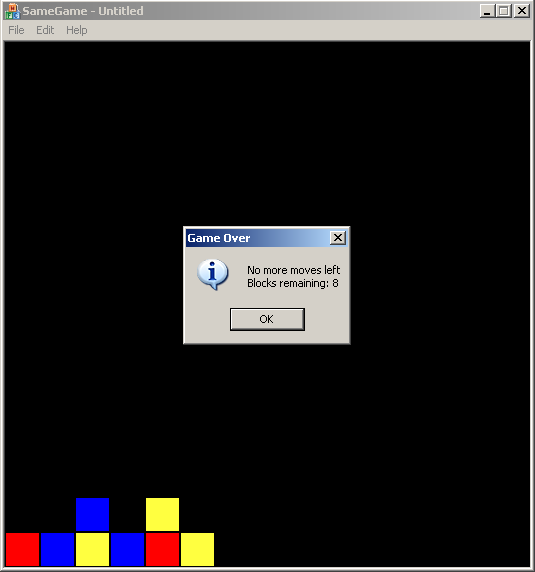

"The Same Game" - A Simple Game from Start to Finish
"The Same Game" - A Simple Game from Start to Finish
By: Ben Marchant
The Algorithm
The algorithm for deleting blocks is rather simple, start with the row and column and make sure there is an adjacent block with the same color. If so, change the color value to the background color. Then go in each direction and delete the adjacent block if it is the same. This process is repeated with each block recursively. Here is the DeleteBlocks function in its entirety.
int CSameGameBoard::DeleteBlocks(int row, int col)
{
// Make sure that the row and column are valid
if(row < 0 || row >= m_nRows || col %lt; 0 || col >= m_nColumns)
return -1;
// Can't delete background blocks
int nColor = m_arrBoard[row][col];
if(nColor == 0)
return -1;
// First check if there are any of the adjacent sides
// with the same color
int nCount = -1;
if((row - 1 >= 0 && m_arrBoard[row - 1][col] == nColor) ||
(row + 1 < m_nRows && m_arrBoard[row + 1][col] == nColor) ||
(col - 1 >= 0 && m_arrBoard[row][col - 1] == nColor) ||
(col + 1 < m_nColumns && m_arrBoard[row][col + 1] == nColor))
{
// Then call the recursive function to eliminate all
// other touching blocks with same color
m_arrBoard[row][col] = 0;
nCount = 1;
// Recursive call for up
nCount +=
DeleteNeighborBlocks(row - 1, col, nColor, DIRECTION_DOWN);
// Recursive call for down
nCount +=
DeleteNeighborBlocks(row + 1,col, nColor, DIRECTION_UP);
// Recursive call for left
nCount +=
DeleteNeighborBlocks(row, col - 1, nColor, DIRECTION_RIGHT);
// Recursive call for right
nCount +=
DeleteNeighborBlocks(row, col + 1, nColor, DIRECTION_LEFT);
// Finally compact the board
CompactBoard();
// Remove the count from the number remaining
m_nRemaining -= nCount;
}
// Return the total number of pieces deleted
return nCount;
}
The first sections are to ensure that the row and column are valid and that the block selected isn't already a background block. Next comes a check if there is at least one adjacent block with the same color above, below, left or right of the block. If there is then the selected block is set to the background color (0) and the count is set to one. This is followed by four calls to DeleteNeighborBlocks(). The first call passes the row above (row - 1) in the same column with the color and then DIRECTION_DOWN. We pass this in because it tells the recursive function to skip the down direction because that is where the execution came from. This just cuts off a few extra steps and speeds the process up. This could be left out and the algorithm would still work correctly, but a little less efficiently. Once all four directions are checked the board is compacted and the number of blocks that were removed is subtracted from the total number of blocks remaining.
The DeleteNeighborBlocks function is very similar to the DeleteBlocks function. Again the first few lines make sure that the row and column are valid and that the specified block is the same color as the original block. After that we make three recursive calls to delete neighbors. We use the direction argument to decide which direction we came from and then skip this direction. This is just a little optimization that eliminates a frivolous recursive call.
int CSameGameBoard::DeleteNeighborBlocks(int row, int col, int color,
Direction direction)
{
// Check if it is on the board
if(row < 0 || row >= m_nRows || col %lt; 0 || col >= m_nColumns)
return 0;
// Check if it has the same color
if(m_arrBoard[row][col] != color)
return 0;
int nCount = 1;
m_arrBoard[row][col] = 0;
// If we weren't told to not go back up, check up
if(direction != DIRECTION_UP)
nCount +=
DeleteNeighborBlocks(row - 1, col, color, DIRECTION_DOWN);
// If we weren't told to not go back down, check down
if(direction != DIRECTION_DOWN)
nCount +=
DeleteNeighborBlocks(row + 1, col, color, DIRECTION_UP);
// If we weren't told to not go back left, check left
if(direction != DIRECTION_LEFT)
nCount +=
DeleteNeighborBlocks(row, col - 1, color, DIRECTION_RIGHT);
// If we weren't told to not go back right, check right
if(direction != DIRECTION_RIGHT)
nCount +=
DeleteNeighborBlocks(row, col + 1, color, DIRECTION_LEFT);
// Return the total number of pieces deleted
return nCount;
}
At this point the adjacent, same colored blocks have been eliminated and changed to the background color so all that is left is to compact the board by moving all of the blocks down and the columns to the left.
void CSameGameBoard::CompactBoard(void)
{
// First move everything down
for(int col = 0; col < m_nColumns; col++)
{
int nNextEmptyRow = m_nRows - 1;
int nNextOccupiedRow = nNextEmptyRow;
while(nNextOccupiedRow >= 0 && nNextEmptyRow >= 0)
{
// First find the next empty row
while(nNextEmptyRow >= 0 &&
m_arrBoard[nNextEmptyRow][col] != 0)
nNextEmptyRow--;
if(nNextEmptyRow >= 0)
{
// Then find the next occupied row from the next empty row
nNextOccupiedRow = nNextEmptyRow - 1;
while(nNextOccupiedRow >= 0 &&
m_arrBoard[nNextOccupiedRow][col] == 0)
nNextOccupiedRow--;
if(nNextOccupiedRow >= 0)
{
// Now move the block from occupied to empty
m_arrBoard[nNextEmptyRow][col] =
m_arrBoard[nNextOccupiedRow][col];
m_arrBoard[nNextOccupiedRow][col] = 0;
}
}
}
}
// Then move everything from right to left
int nNextEmptyCol = 0;
int nNextOccupiedCol = nNextEmptyCol;
while(nNextEmptyCol < m_nColumns && nNextOccupiedCol %lt; m_nColumns)
{
// First find the next empty column
while(nNextEmptyCol < m_nColumns &&
m_arrBoard[m_nRows - 1][nNextEmptyCol] != 0)
nNextEmptyCol++;
if(nNextEmptyCol < m_nColumns)
{
// Then find the next column with something in it
nNextOccupiedCol = nNextEmptyCol + 1;
while(nNextOccupiedCol < m_nColumns &&
m_arrBoard[m_nRows - 1][nNextOccupiedCol] == 0)
nNextOccupiedCol++;
if(nNextOccupiedCol < m_nColumns)
{
// Move entire column to the left
for(int row = 0; row < m_nRows; row++)
{
m_arrBoard[row][nNextEmptyCol] =
m_arrBoard[row][nNextOccupiedCol];
m_arrBoard[row][nNextOccupiedCol] = 0;
}
}
}
}
}
First we go column by column moving things down. Starting at the bottom row (m_nRows - 1) we loop looking for the next empty row. Once that is found, there is another loop that searches for the next occupied row. Once these two are located then the next empty row is filled with the next occupied row. This process is repeated until there are no more blocks to move down.
The second part of the function is almost identical to the first part except for the outer for loop. The reason we can eliminate the outer loop is that we only have to look at the bottom row in each column, if it is empty then the whole column is empty and we can move something into its place.
Finishing Condition
There is only one step left to accomplish our task of creating a "playable" game. That is to implement the IsGameOver function. The function checks for a valid move which is to say it checks each block to see if there is an adjacent block with the same color. When the first one is found, the function short-circuits and returns false immediately. There is no need to continue checking. The only way to tell in the game is actually over is to actually do a full search and ensure that there aren't any moves left.
bool CSameGameBoard::IsGameOver(void) const
{
// Go column by column, left to right
for(int col = 0; col < m_nColumns; col++)
{
// Row by row, bottom to top
for(int row = m_nRows - 1; row >= 0; row--)
{
int nColor = m_arrBoard[row][col];
// Once we hit background, this column is done
if(nColor == 0)
break;
else
{
// Check above and right
if(row - 1 >= 0 &&
m_arrBoard[row - 1][col] == nColor)
return false;
else if(col + 1 < m_nColumns &&
m_arrBoard[row][col + 1] == nColor)
return false;
}
}
}
// No two found adjacent
return true;
}
The two for loops allow us to search column by column and row by row for valid moves. Because we search left to right we don't have to check to the left for adjacent blocks of the same color. Searching from bottom to top eliminates the need to check below for valid moves. This order of searching also allows us to optimize the IsGameOver function a little further. Once the color of the block is the background color we can skip the rest of the column because anything above it will be empty also (thanks to the CompactBoard function).
You should now be able to play the full game to completion and it should look something like this:

Conclusion
In this article we've gone from a game that didn't do anything other than draw the game board to a playable version of the SameGame. We discussed event driven programming as well as how to implement that using MFC. We created an event handler for the left mouse click and responded with the main game algorithm. In the next article we'll be adding more features to our game through the menus.
Source Code from Part 2
Continue to Part 3: Adding new Difficulty
Levels